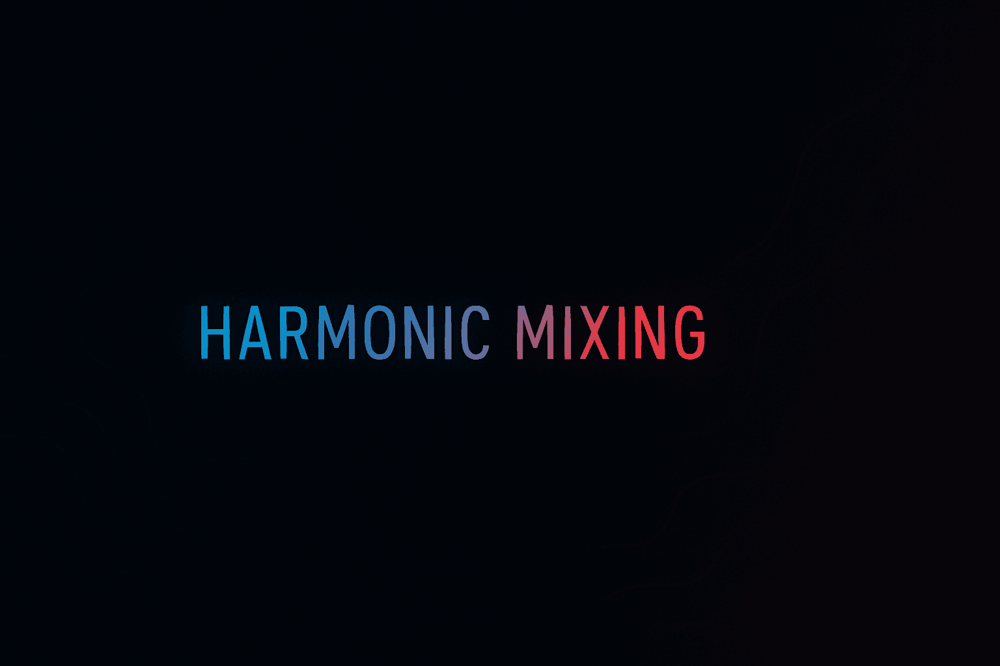
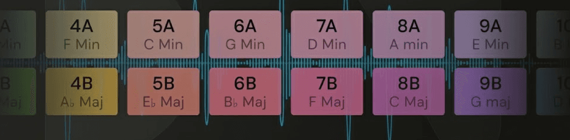
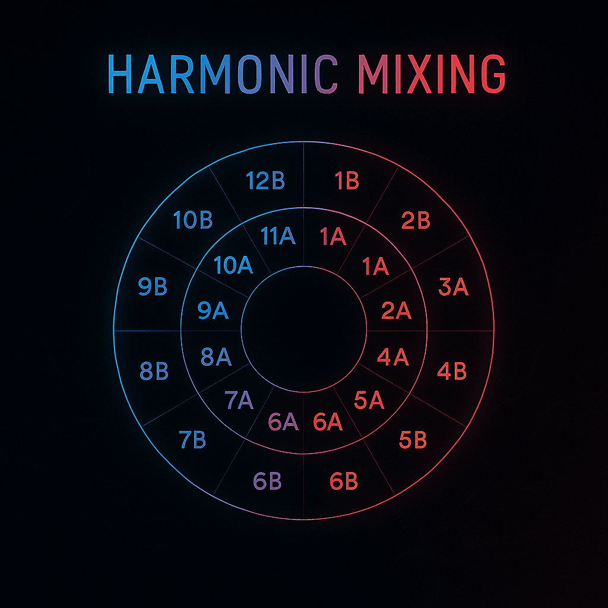
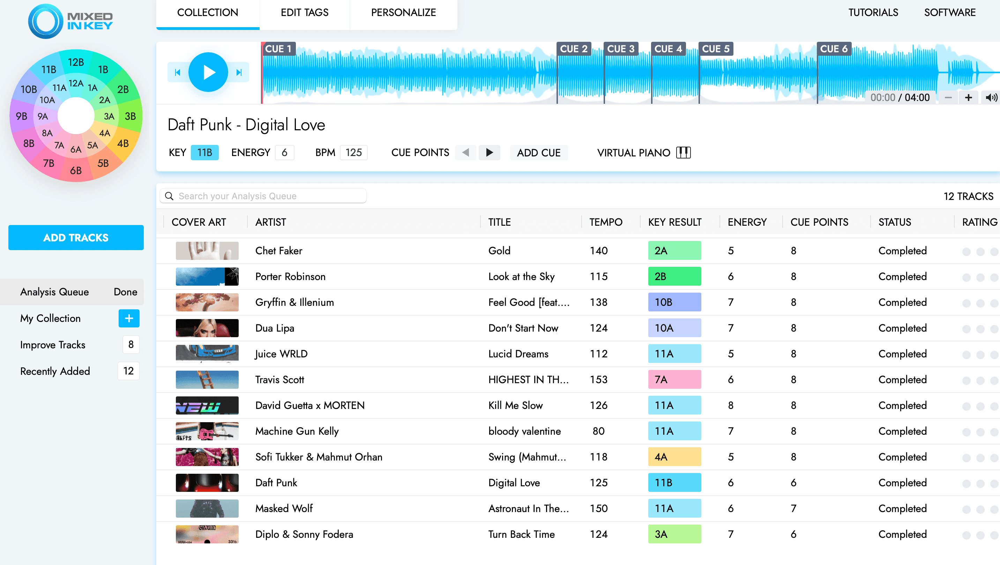

Basics

Learning how to create seamless, emotionally resonant DJ sets is the goal, and why harmonic mixing is the most powerful technique in your arsenal to achieve it.
As a new DJ, I would never think or care about the key's of songs that I would mix. But as I studied the masters, I realised that this was a core technique for ensuring that their mixes and transitions sounded seamless and natural.
Looking for more DJ tips?
- Learn How to Make A DJ Mix with my pro tips
- Accelerate your mixing with DJ Auto Mixing Software
- Build and Organize your Music Library like a master DJ
What You’ll Learn About Mixing In Key for DJs
- What harmonic mixing truly is and the basic music theory behind it.
- Why mastering this skill is essential for professional-sounding DJ mixes.
- How to use the Camelot Wheel and key detection software to find tracks with compatible keys.
- How PulseDJ can automatically identify harmonically compatible songs in your library to make mixing in key effortless.
Your New Smart DJ Co-Pilot: What is PulseDJ?

AI co-pilot designed to run alongside your existing DJ software. It reads your library and playing history to provide intelligent track suggestions in real-time. Beyond its powerful harmonic mixing features, it also analyzes your unique "MyStyle" and shows you what's trending on the PulseDJ HOT 100 chart. It’s a discovery tool that helps you stay creative and never run out of ideas, ensuring you can always find the perfect next track.

What is Harmonic Mixing? (And Why Should DJs Care?)

As a DJ, I can tell you that my journey changed completely the day I learned about harmonic mixing. Before that, I was just a "beat-matcher." I could get two tracks in time, but I couldn't figure out why some transitions sounded amazing and others... well, sounded like a train wreck.
Harmonic mixing, also known as key mixing, is the art of mixing two songs together that are in the same or a compatible musical key.
Think of it like this: a musical key is a "family" of notes that sound good together. When you play a song, its melodies and basslines are all built from this family of notes.
When you try to mix two tracks from different key "families," their notes clash. The basslines sound muddy, the vocals sound sour, and the whole mix feels "off." This is what we call one of the dreaded key clashes.
But when you mix two tracks that are in compatible keys? Magic happens.
The bassline from one song can flow perfectly under the melody of the next track. You can blend two records for 32 or 64 bars, and they sound like they were made for each other. This is the secret to creating that seamless, professional perfect flow that we all chase. It’s a technique even the biggest DJs like David Guetta rely on for their massive sets.
Why Harmonic Mixing is Important for DJing
I get it. More theory? But trust me, this is the one piece of music theory that directly translates to a better audience reaction.
Avoiding the Dreaded Key Clash
You've heard it, even if you couldn't name it. It’s that jarring, unpleasant sound when a new track's melody comes in and just fights with the track that's playing. It can kill the energy on a dancefloor in an instant. This is especially true for dance music that is heavy on melodic content. By understanding harmonic mixing, you eliminate this risk completely.
Building Emotional Journeys
This is where it gets really creative. Harmonic mixing isn't just about avoiding bad mixes; it's about building incredible ones. Musical keys have moods.
- Major keys (like the C Major Scale) generally sound happy, euphoric, and uplifting.
- Minor keys tend to sound more serious, intense, moody, or soulful.
When you know the key of your tracks, you can control the emotional narrative of your DJ sets. You can build tension by staying in minor keys and then create a massive release by shifting to a euphoric major key. You become a storyteller, not just a human jukebox.
Professional Polish
Simply put, key mixing is what separates the amateurs from the pros. It's an essential part of the craft today, and it's one of the best digital dj tips I ever received. It makes your DJ mix sound clean, intentional, and expensive. When you learn to harmonically mix, you're not just playing songs; you're composing a new, live piece of music.
How To Mix Harmonically for DJs

Don't panic. You do not need to go to music school or learn to play the keyboard to understand this. We have tools that do the heavy lifting. But it helps to know the basics.
What is a Musical Key?
As I mentioned, a key is a family of notes. This family is defined by its starting note, which is also called the root note. For example, the C Major Scale (the key of C Major) starts on C and uses all the white notes on a piano. The key of E Major, however, starts on E and uses a different set of notes (including some black keys). Trying to play a C Major melody over an E Major chord would sound awful - they are not in a compatible family.
What are "Compatible" Keys?
This is the core concept for us as DJs. A "compatible" key isn't just the same key (like C Major into C Major). It's also other keys that share a high number of the same notes.
For example, C Major and A Minor are "relative" keys. They use the exact same family of notes, but one sounds happy (C Major) and one sounds sad (A Minor). Mixing between them is seamless.
"This is getting complicated," you're thinking. "How am I supposed to remember all this?"
You don't have to. We use a secret weapon.
The DJ's Secret Weapon: The Camelot Wheel
This is it. If you learn one thing from this article, make it this. The Camelot Wheel is a visual tool created by Mark Davis of Mixed in Key that simplifies harmonic mixing for DJs. It's the easiest way to find tracks that are harmonically compatible.
How to Read the Camelot Wheel

The Camelot Wheel is a circle divided like a clock, from 1 to 12.
- The Outer Circle: This represents the Major keys (labeled with a "B").
- The Inner Circle: This represents the Minor keys (labeled with an "A").
Each track in your library can be given a "Camelot" number, like "8A" (A Minor) or "9B" (E Major).
The Rules of Mixing
Once your tracks have this key information, mixing in key is incredibly simple. For any track you're playing, you can safely mix into a next track that has:
- The Same Number (Perfect Match): 8A → 8A. This is the easiest way and sounds perfectly smooth.
- One Number Up: 8A → 9A. This often creates a subtle lift in energy.
- One Number Down: 8A → 7A. This can subtly mellow the mood.
- The Relative Key (Major/Minor Flip): 8A → 8B. This is that "emotional flip" I was talking about, changing the mood from minor to major (or vice-versa) while remaining perfectly harmonic.
A Practical Example of Using The Camelot Wheel for DJing
Let's say your master deck is playing a deep house track in 8A (A Minor).
You look at your library. You can instantly mix to any track labeled:
- 8A (for a seamless blend)
- 7A (to bring the energy down a notch)
- 9A (to lift the energy)
- 8B (to switch from a moody vibe to an uplifting one)
That's it! You just went from having one "perfect" match (the same key) to having four high-probability harmonically compatible tracks to choose from.
Energy Level Changes (The "Key Shift")
That "one number up" (e.g., 8A to 9A) is a basic key shift. It's a classic technique to make your mix feel like it's "climbing" or "building" without a massive change in tempo.
Getting the Key Information: Key Detection Software
So, how do you get these "8A" or "9B" labels on your tracks? You don't guess. You use key detection software.
Your DJ Software's Built-in Tools for Key Detection

Most DJ software - like Serato, Rekordbox, Traktor, and Virtual DJ - has key analysis built-in. When you analyze your music library, the software will do its best to determine the track's key. You can then display this in your library's key column.
Dedicated Software: Mixed in Key

The industry-standard, and what I personally use for my library analysis, is the aptly named Mixed in Key. It's a specialized piece of software that is renowned for its accuracy. It analyzes your audio files and writes the key results (in Camelot notation) directly to your tracks, so they show up perfectly in your DJ software.
Understanding the Results (Camelot vs. Standard)
Your DJ software might show you the standard musical key (e.g., "A Minor") or the Camelot key ("8A"). As a DJ, I find the Camelot system far easier to use in a live gig. I don't want to do "music math" in my head; I just want to match numbers.
Here’s a quick reference table showing how the systems relate.
Camelot Wheel vs. Standard Musical Keys - A Table
Camelot Wheel
Major Key
Minor Key
1B / 1A
G♭ / F♯
2B / 2A
3B / 3A
4B / 4A
5B / 5A
6B / 6A
7B / 7A
8B / 8A
9B / 9A
10B / 10A
11B / 11A
12B / 12A
Putting It All Together: Your Harmonic Mixing Workflow
Okay, let's make this practical. Here is the step-by-step workflow for you to start harmonic mixing tonight.
Step 1: Analyze Your Library
Run all your music through your DJ software or (my recommendation) Mixed in Key to get the key analysis done. This is a "set it and forget it" step. Do it once, and you're set.
Step 2: Display the Key in Your Software
Go into your DJ software's settings and make sure the key column is visible in your library. I like to have it right next to my BPM column. You can even sort your entire library by key to see all your "8A" tracks in one place.
Step 3: During Your Set
When you have a track playing on the master deck, look at its key (e.g., "8A"). Now, scan your library or playlist for tracks with compatible keys (7A, 8A, 9A, or 8B).
Step 4: Use Your Ears!
This is the most important tool you have. The Camelot Wheel gives you a high probability of success, but it's not a 100% guarantee. Sometimes, a mix that should work on paper just doesn't feel right. Always trust your ears. If two records sound good together, they are good.
Beyond the Basics: Creative Harmonic Mixing Techniques
Once you're comfortable with the basics, you can start getting really creative .
- The Energy Boost Jump: Need to lift the room? Try jumping +2 on the wheel (e.g., 8A → 10A). It's a more dramatic key shift that can create a "hands in the air" moment.
- The "Emotional Flip": As discussed, mixing between the inner and outer wheel (e.g., 8A ↔ 8B) is the most powerful way to change the mood of your mix from energetic to soulful, or vice-versa.
- When to Break the Rules: If you're mixing an acapella, or just a percussion loop, the key often doesn't matter as much. Understanding the rules is what gives you the confidence to know when you can break them.
- Using Pitch Control and Key Lock: Modern DJ software has a "Key Lock" or "Master Tempo" button. Always have this on. It allows you to change the BPM of a track without changing its pitch (and therefore its key ). Some software even has a "Key Shift" feature, allowing you to change a track's key on the fly to harmonically mix tracks that weren't originally compatible .
The Easiest Way to Mix Harmonically: How PulseDJ Helps
Okay, I've just thrown a lot of theory at you. The Camelot Wheel , key analysis , sorting columns... it can be a lot to manage, especially in a live gig.
This is where my workflow has evolved. Many DJs I know get so lost in their laptop screens, sorting by the key column, that they lose connection with the crowd. When I'm deep in a mix, I don't want to be sorting columns and doing "key math" in my head.
This is why I use PulseDJ. It runs alongside my Rekordbox setup, and it changes the game for harmonic mixing.
Instant Harmonic Highlighting
This is the killer feature for me. When I play a track on my main deck, PulseDJ instantly scans my library and its own database for suggestions. And here's the magic: it highlights all harmonically compatible tracks .
I don't have to think about the wheel. I don't have to check if "8A" goes with "9A". PulseDJ just shows me the compatible songs8. It's like having a co-pilot who's already done all the key matching for me.
See Key Information at a Glance
PulseDJ also clearly displays the Key (in Camelot notation, like 8A or 5B) and BPM for every single suggestion. This lets me make a split-second decision. I can see a harmonically compatible track (highlighted in green), check its BPM, and know instantly that it's a perfect fit. It's one of the most intuitive tools for improving my DJing workflow.
Start Harmonic Mixing with Confidence

Mastering harmonic mixing is, without a doubt, one of the single biggest leaps you can make in the quality of your DJ sets. It’s the difference between just playing two tracks and weaving them together. It takes your mixes from jarring to seamless, allowing you to control the audience's energy with precision.
We've covered the theory, from the major scale and other keys to the practical application of the Camelot Wheel and key detection software. We've also covered how to mix in key. But you don't have to do it all manually.
The best way to start is to get your tracks analyzed and see the connections.
This is why I strongly recommend downloading PulseDJ. It takes the hard work of key matching and understanding musical keys and makes it visual and intuitive. You'll see those green highlighted tracks and instantly know, "That's the one."
Stop guessing and start mixing with harmonic precision.
Try PulseDJ for free and hear the difference in your mixes tonight.
‹ How to Beatmatch for DJs: The Ultimate Guide to DJ Beat Matching Techniques